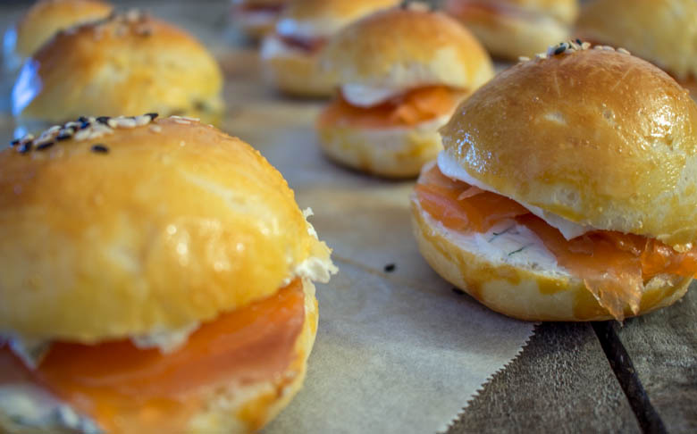

Minis hamburgers saumon-aneth-cream cheese

Je vous présente aujourd’hui mes minis burgers au saumon fumé, à l’aneth et au cream cheese. Recette idéale pour un apéro réussi!
Il s’agit de ma recette pour la Bataille Food qui est un défi culinaire lancé par Jenna du Bistro de Jenna qui réunit blogueurs et non-blogueurs autour d’un thème commun très gourmand! L’objectif étant de se faire plaisir, d’inventer et de partager de merveilleuses recettes!
Le but de cette édition de la bataille food est de faire voyager vos papilles dans le temps avec une recette nous rappelant notre enfance tout en incluant comme ingrédients de la crème et des herbes aromatiques!
Honnêtement je n’ai pas été très inspirée par ce thème car pour moi les recettes de mon enfance, celles qui m’ont marqué du moins, ne contiennent pas forcément de crème et d’herbes aromatiques. Il a cependant fallu jouer le jeu et je me souviens que quand j’étais enfant quelques fois nous allions chercher des hamburgers (souvent le dimanche et j’étais super contente!!) et puis mes repas de Noël (mes repas préférés!). J’ai alors remixé un peu tout ça reprenant le hamburger et le saumon fumé de Noël pour faire ces minis hamburgers au saumon, à l’aneth et au cream cheese 🙂
Vous l’aurez donc compris, j’ai choisi l’aneth comme herbe aromatique et le cream cheese comme crème^^.
Ces petits hamburgers sont parfaits pour être servis en apéritif et très très rapide à réaliser!
Je vous propose d’ailleurs de découvrir ou redécouvrir ma recette de pains hamburgers (ici) que je fait à chaque fois et que je vous conseille!
Je vous laisse découvrir cette recette ultra simple mais qui j’espère vous donnera quelques idées!
Ingrédients
- Cream cheese - 300g
- Saumon fumé - 8 tranches
- Minis pains hamburgers - une vingtaine
- Aneth
Instructions
- Couper les pains de vos hamburgers en deux
- Ciseler l'aneth
- Dans un bol mélanger le cream cheese et l'aneth
- Tartiner les deux côtés de vos pains avec le mélange cream cheese-aneth
- Déposer un morceau de saumon fumé sur le pain hamburger tartiné
- Refermer avec le chapeau
- Servir aussitôt!

Les tips de la communauté
Les Mini Hamburgers au Saumon-Aneth reçoivent des retours positifs avec appréciation pour le format mini et la combinaison saumon-aneth-cream cheese.
Astuces
- Utiliser du saumon frais ou de qualité pour le meilleur goût
- Ne pas surcharger les petits pains pour garder une cohérence
Variantes suggérées
- Remplacer le saumon par d'autres poissons selon les disponibilités
- Ajouter des légumes croquants pour plus de texture
Ajustements signalés
- avouer que c’est mon petit faible aussi!Alors on ne peut qu’aimer ta recette!En tout cas ils sont bien ronds, bien bombés, ils sont beaux quoi!Bravo Steph!!!Bisous <3